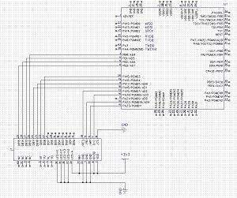
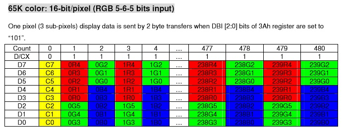

<!DOCTYPE html>
<html lang="en">
<head>
  <title>ATSAM4S GPIO - LCD</title>
  <meta charset="utf-8">
  <meta name="viewport" content="width=device-width, initial-scale=1">
  <meta http-equiv="X-UA-Compatible" content="IE=edge,chrome=1">          
  <meta name="description" content="ATSAM4S TUTORIAL">
  <meta name="keywords" content="No ASF, ARM, Atmel-ICE, ATSAM4S">
  <meta name="author" content="Robert M">	
  <link rel="stylesheet" href="http://maxcdn.bootstrapcdn.com/bootstrap/3.3.5/css/bootstrap.min.css">
  <script src="https://ajax.googleapis.com/ajax/libs/jquery/1.11.3/jquery.min.js"></script>
  <script src="http://maxcdn.bootstrapcdn.com/bootstrap/3.3.5/js/bootstrap.min.js"></script>
  <link rel="stylesheet" href="css.css">
	<script>
        (function(i,s,o,g,r,a,m){i['GoogleAnalyticsObject']=r;i[r]=i[r]||function(){
          (i[r].q=i[r].q||[]).push(arguments)},i[r].l=1*new Date();a=s.createElement(o),
          m=s.getElementsByTagName(o)[0];a.async=1;a.src=g;m.parentNode.insertBefore(a,m)
          })(window,document,'script','//www.google-analytics.com/analytics.js','ga');

          ga('create', 'UA-50914817-1', 'mwmw.ca');
          ga('send', 'pageview');
	</script>  
</head>

<body>


<nav class="navbar navbar-default">
  <div class="container-fluid">
    <div class="navbar-header">
      <a class="navbar-brand" href="http://www.mwmw.ca">mwmw.ca</a>
    </div>
    <ul class="nav navbar-nav">
      <li class="active"><a href="index.html">Atsam4s Tutorial</a></li>      
      <li><a href="projects.html">Projects</a></li> 
      <li><a href="contact.html">Contact</a></li> 
    </ul>
  </div>
</nav>

<div class="container-fluid text-left">    
  <div class="row content">
    <div class="col-sm-2 sidenav">	
	<ul class="nav nav-pills nav-stacked btn-md ">
	<li ><a href="index.html" class="active">Getting Started</a></li>	
	<li><a href='hardware.html' >Hardware</a></li>
	<li><a href='programming.html' >Programming</a></li>
	<li><a href='bootloader.html' >Boot Loader</a></li>
	<li><a href='bittwiddling.html' >Bit Twiddling</a></li>
	<li><a href='gpio.html' ><b>GPIO</b> - General Purpose Input/Output</a></li>
	<li><a href='clock.html' ><b>PMC</b> - System Clock</a></li>
	<li><a href='interrupts.html' ><b>INT</b> - Interrupts</a></li>
	<li><a href='uart.html' ><b>UART</b> - Universal Asynchronous Receiver-Transmitter</a></li>	
	<li><a href='timercounter.html' ><b>TC</b> - Timer/Counter Overflow Interrupt</a></li>
	<li><a href='timercounterdelay.html' ><b>TC</b> - Timer/Counter Compare Interrupt</a></li>
	<li><a href='i2c.html' ><b>I2C</b> - Inter-integrated Circuit</a></li>
	<li><a href='spi.html' ><b>SPI</b> - Serial Peripheral Interface</a></li>
	<li class="active"><a href='gpio-glcd.html' ><b>GPIO</b> - GLCD</a></li>
	<li><a href='rtc.html' ><b>RTC</b> - Real Time Clock</a></li>
	<li><a href='rtt.html' ><b>RTT</b> - Real Time Timer</a></li>
	<li><a href='adc.html' ><b>ADC</b> - Analog Digital Converter</a></li>
	<li><a href='dacc.html' ><b>DACC</b> - Digital Analog Converter</a></li>
	<li><a href='sleep.html' ><b>SUPCC</b> - Sleep/Wake/Power Saving</a></li>
	<li><a href='qdec.html' ><b>QDEC</b> - Quadrature Signal Decoder</a></li>
	<li><a href='pwm.html' ><b>PWM</b> - Pulse Width Modulation</a></li>
	<li><a href='debugging.html' >Debugging</a></li>
	</ul>
    </div>
	
    <div class="col-sm-8 text-left"> 	
		<h2>GPIO / GLCD</h2>
		
<p>In this example we will create a very basic library to drive the <a href='http://www.digikey.ca/product-detail/en/NHD-2.4-240320SF-CTXL%23-FTN1/NHD-2.4-240320SF-CTXL%23-FTN1-ND/4429440'>NHD-2.4-240320SF-CTXL#-FTN1</a> which uses the ILI9341 Controller.<br><br>
Using the following schematic that only shows the connections from ATSAM4S to the LCD as well as power to the LCD.  Please note that the typical source voltage for the LCD, LCD IO and backlight are varying voltages, but they are all 3.3v max.<br><br>
<a href='images/glcd.jpg'></a><br><br>
Here are some quick stats, a run down on the pinout for the LCD and how it works.</p>

<ul>
	<li>2.4" diagonal</li>
	<li>240x320 pixels (portrait)</li>
	<li>white LED backlight</li>
	<li>RGB 5-6-5</li>
	<li>4 wire resistive touch panel</li>
	<li>ILI9341 Controller</li>
	<li>8bit or 16bit parallel interface</li>
</ul>

<table class='datatable' border=1>
<tr>
<th> Pin # </th>
<th> Name </th>
<th> Description </th>
</tr>
<tr>
<td>1</td>
<td>GND</td>
<td></td>
</tr>
<tr>
<td>2</td>
<td>YD</td>
<td>Touch panel: down</td>
</tr>
<tr>
<td>3</td>
<td>XL</td>
<td>Touch panel: left</td>
</tr>
<tr>
<td>4</td>
<td>YU</td>
<td>Touch panel: up</td>
</tr>
<tr>
<td>5</td>
<td>XR</td>
<td>Touch panel: right</td>
</tr>
<tr>
<td>6</td>
<td>NC</td>
<td></td>
</tr>
<tr>
<td>7</td>
<td>VDD</td>
<td>min: 2.3v | typ: 2.8 | max:3.3v </td>
</tr>
<tr>
<td>8</td>
<td>IOVDD</td>
<td>min: 1.65v | typ: 2.8 | max:3.3v</td>
</tr>
<tr>
<td>9</td>
<td>NC</td>
<td></td>
</tr>
<tr>
<td>10</td>
<td>CS</td>
<td>Chip select - active low, can tie to ground</td>
</tr>

<tr>
<td>11</td>
<td>DC</td>
<td>Data(1) or Command(0)</td>
</tr>
<tr>
<td>12</td>
<td>WR</td>
<td>active low write signal</td>
</tr>
<tr>
<td>13</td>
<td>RD</td>
<td>active low read signal</td>
</tr>
<tr>
<td>14</td>
<td>DB0</td>
<td rowspan='16'>Bidirection data bus<br><br>8 bit: use DB8-DB15<br> 16 bit: use DB0-DB15</td>
</tr>
<tr>
<td>15</td>
<td>DB1</td>

</tr>
<tr>
<td>16</td>
<td>DB2</td>

</tr>
<tr>
<td>17</td>
<td>DB3</td>

</tr>
<tr>
<td>18</td>
<td>DB4</td>

</tr>
<tr>
<td>19</td>
<td>DB5</td>

</tr>
<tr>
<td>20</td>
<td>DB6</td>

</tr>
<tr>
<td>21</td>
<td>DB7</td>

</tr>
<tr>
<td>22</td>
<td>DB8</td>

</tr>
<tr>
<td>23</td>
<td>DB9</td>

</tr>
<tr>
<td>24</td>
<td>DB10</td>

</tr>
<tr>
<td>25</td>
<td>DB11</td>

</tr>
<tr>
<td>26</td>
<td>DB12</td>

</tr>
<tr>
<td>27</td>
<td>DB13</td>

</tr>
<tr>
<td>28</td>
<td>DB14</td>

</tr>
<tr>
<td>29</td>
<td>DB15</td>

</tr>
<tr>
<td>30</td>
<td>RESET</td>
<td>Resets the LCD - active low</td>
</tr>
<tr>
<td>31</td>
<td>IM0</td>
<td>16 bit: 0, 8bit: 1</td>
</tr>
<tr>
<td>32</td>
<td>NC</td>
<td></td>
</tr>
<tr>
<td>33</td>
<td>GND</td>
<td></td>
</tr>
<tr>
<td>34</td>
<td>LED-K1</td>
<td></td>
</tr>
<tr>
<td>35</td>
<td>LED-K2</td>
<td></td>
</tr>
<tr>
<td>36</td>
<td>LED-K3</td>
<td></td>
</tr>
<tr>
<td>37</td>
<td>LED-K4</td>
<td></td>
</tr>
<tr>
<td>38</td>
<td>LED-A</td>
<td>Backlight anode: 3.2v</td>
</tr>
<tr>
<td>39</td>
<td>GND</td>
<td></td>
</tr>
<tr>
<td>40</td>
<td>NC</td>
<td></td>
</tr>
</table>
<p>We will use an 8 bit data bus, so that means we will use DB8-DB15 and set IM0 to vcc.<br>
To send a command to the LCD you set your data pins with the command you want to send then set the write pin low and set the write pin high again.<br>
To send data to the LCD you set your data pins with the data you want to send then set the write pin low and set the write pin high again.<br>
A list of commands can be found in the <a href='http://www.newhavendisplay.com/app_notes/ILI9341.pdf' class='blink'>controller datasheet</a> starting on page 83.  A lot of this datasheet can be ignored.  We will be using instructions for 16bit per pixel RGB 5-6-5 - 8bit data bus for 8080I found on page 65.  To send pixel data to the LCD first you set your column address start and end and page address start and end.  This gives us a box to start writing pixel data to.  Then once you have your area you send the command to start writing to video memory and then start writing bytes of data to colourize the pixels. <br>
<ol>
<li>Set lcd pin 11 (data or command) to 0 to accept a command
<li>Set the 8 bit port (LCD DB8-DB15) to the value of the command from the datasheet
<li>Set pin 12 (write) to low, make sure it's low long enough for the LCD to read it (a few ns: see datasheet), set pin 12 high again
<li>Set LCD pin 11 (data or command) to 1 to accept data
<li>In 8 bit mode, set LCD pins DB8-DB15 to the first byte of the two byte data transfer (R,R,R,R,R,G,G,G)
<li>Set pin 12 (write) to low, make sure it's low long enough for the LCD to read it (a few ns: see datasheet), set pin 12 high again
<li>Set the last databyte (G,G,G,B,B,B,B,B)
<li>Set pin 12 (write) to low, make sure it's low long enough for the LCD to read it (a few ns: see datasheet), set pin 12 high again
<li>Repeat from step 5 until you've written all the bytes bounded by the page and column address you set - otherwise the pixels will start writing from the beginning of that box.
</ol>

<br>
Here is an image from the datasheet that shows the command to start writing video memory and bytes in the 5-6-5 format.<br>

<br><br>
Yellow: CMD (start writing memory)<br>
Red: 5 bits for amount of red in a pixel<br>
Green: 6 bits for amount of green in a pixel<br>
Blue: 5 bit for amount of blue in a pixel<br><br>
The following program is an example of setting up the LCD and then drawing a red screen, green screen and then a blue screen.</p>

<h3>main.c</h3>
<pre>

<span class="flow">#include </span><span class="method">"sam.h"</span>
<span class="flow">#include </span><span class="method">"basic_uart.h"</span>
<span class="flow">#include </span><span class="method">"delay.h"</span>
<span class="flow">#include </span><span class="method">"glcd.h"</span>

<span class="var">void</span> <span class="method">clock_init</span>(){
    <span class="define">REG_CKGR_MOR</span> |= <span class="define">CKGR_MOR_KEY_PASSWD</span> | <span class="define">CKGR_MOR_MOSCXTEN</span>;
    <span class="flow">while</span> (!(<span class="define">REG_PMC_SR</span> & <span class="define">PMC_SR_MOSCXTS</span>));
    <span class="define">REG_CKGR_MOR </span>|= <span class="define">CKGR_MOR_KEY_PASSWD </span>| <span class="define">CKGR_MOR_MOSCSEL</span>;
    <span class="define">REG_PMC_MCKR </span>|= <span class="define">MC_MCKR_CSS_MAIN_CLK</span>;
    <span class="flow">while </span>(!(<span class="define">REG_PMC_SR </span>& <span class="define">PMC_SR_MCKRDY</span>));
    <span class="define">REG_PMC_MCKR </span>|= <span class="define">PMC_MCKR_PRES_CLK_1</span>;
    <span class="flow">while</span> (!(<span class="define">REG_PMC_SR</span> & <span class="define">PMC_SR_MCKRDY</span>));
}

<span class="var">int</span> <span class="method">main</span>(<span class="bar">void</span>)
{
    <span class="comment">/* Initialize the SAM system */</span>
    <span class="method">SystemInit</span>();
	<span class="method">clock_init</span>();
	<span class="method">UART_Init</span>();	
	<span class="method">timerInit</span>();
	<span class="method">printString</span>("wait");
	<span class="method">delay_ms</span>(1000);
	<span class="method">printString</span>("done");
	<span class="method">init_LCD</span>();	
	
    <span class="comment">/* Replace with your application code */</span>
	<span class="method">drawTestPattern</span>();
	<span class="method">printString</span>("draw test");
    <span class="flow">while </span>(1) 
    {
		
			
    }
}

</pre>

<h3>glcd.c</h3>
<pre>
<span class="flow">#include </span><span class="method">"sam.h"</span>
<span class="flow">#include </span><span class="method">"delay.h"</span>
<span class="flow">#include </span><span class="method">"glcd.h"</span>
<span class="flow">#include </span><span class="method">"basic_uart.h"</span>

<span class="var">void </span><span class="method">init_LCD</span>(<span class="var">void</span>){
	<span class="comment">//----SETUP PINS----//</span>
	<span class="comment">//set pins controllable by PIO controller</span>
	<span class="define">REG_PIOA_PER</span> |= (dc_pin|rd_pin|wr_pin|res_pin|db8_pin|db9_pin|db10_pin|db11_pin);
	<span class="define">REG_PIOB_PER</span> |= (db12_pin|db13_pin|db14_pin|db15_pin);
	<span class="comment">//set pins as output</span>
	<span class="define">REG_PIOA_OER</span> |= (dc_pin|rd_pin|wr_pin|res_pin|db8_pin|db9_pin|db10_pin|db11_pin);
	<span class="define">REG_PIOB_OER</span> |= (db12_pin|db13_pin|db14_pin|db15_pin);
	<span class="comment">//set read/write/reset pins high since they are active low</span>
	<span class="define">REG_PIOA_SODR</span> |= (rd_pin|wr_pin|res_pin);
	<span class="comment">//set REG_PIOA/B_OWER so that is a write mask for pins</span>
	<span class="define">REG_PIOA_OWER</span> |= (db8_pin|db9_pin|db10_pin|db11_pin);
	<span class="define">REG_PIOB_OWER</span> |= (db12_pin|db13_pin|db14_pin|db15_pin);
	
	<span class="comment">//----SETUP LCD----//</span>
	<span class="define">REG_PIOA_SODR </span>|= rd_pin;
	<span class="define">REG_PIOA_CODR </span>|= wr_pin;
	<span class="method">LCD_reset</span>();
	
	<span class="method">SendCommand</span>(0x28);<span class="comment"> //display off</span>
	<span class="method">SendCommand</span>(0x11);<span class="comment"> //sleep out</span>
	<span class="comment">//power control A start up</span>
	<span class="method">SendCommand</span>(0xCB);<span class="comment"> // vcore 1.6, vbc 5.6v</span>
	<span class="method">SendCommandData</span>(0x39);
	<span class="method">SendCommandData</span>(0x2C);
	<span class="method">SendCommandData</span>(0x00);
	<span class="method">SendCommandData</span>(0x34);  
	<span class="method">SendCommandData</span>(0x02);
	<span class="comment">//power control B start up</span>
	<span class="method">SendCommand</span>(0xCF); <span class="comment"> //power control B</span>
	<span class="method">SendCommandData</span>(0x00);
	<span class="method">SendCommandData</span>(0x81);
	<span class="method">SendCommandData</span>(0x30);
  
	<span class="method">SendCommand</span>(0xC0); 
	<span class="method">SendCommandData</span>(0x26); <span class="comment"> //power control 1</span>
	<span class="method">SendCommandData</span>(0x04);<span class="comment"> //second parameter for ILI9340 (ignored by ILI9341)</span>
  
	<span class="method">SendCommand</span>(0xC1); 
	<span class="method">SendCommandData</span>(0x11); <span class="comment"> //power control 2</span>
  
	<span class="method">SendCommand</span>(0xC5); 
	<span class="method">SendCommandData</span>(0x35); 
	<span class="method">SendCommandData</span>(0x3E); <span class="comment"> //VCOM control 1</span>
  
	<span class="method">SendCommand</span>(0x36); 
	<span class="method">SendCommandData</span>(0x88); <span class="comment"> //memory access control = BGR</span>
  
	<span class="method">SendCommand</span>(0xB1); 
	<span class="method">SendCommandData</span>(0x00); 
	<span class="method">SendCommandData</span>(0x18);  <span class="comment">//frame rate control</span>
  
	<span class="method">SendCommand(0xB6)</span>; 
	<span class="method">SendCommandData</span>(0x0A); 
	<span class="method">SendCommandData</span>(0xA2); <span class="comment"> //display function control</span>
  
	<span class="method">SendCommand</span>(0xC7); 
	<span class="method">SendCommandData</span>(0xBE);<span class="comment"> //VCOM control 2</span>
  
	<span class="method">SendCommand</span>(0x3A); 
	<span class="method">SendCommandData</span>(0x55);<span class="comment"> //pixel format = 16 bit per pixel</span>
  
 <span class="comment"> /*SendCommand(0xE0)</span>; 
  <span class="method">SendData</span>(0x1F);<span class="comment"> //positive gamma correction</span>
 <span class="method"> SendData</span>(0x1B);
 <span class="method"> SendData</span>(0x18);
 <span class="method"> SendData</span>(0x0B);
  <span class="method">SendData</span>(0x0F);
 <span class="method"> SendData</span>(0x09);
 <span class="method"> SendData</span>(0x46);
  <span class="method">SendData</span>(0xB5);
  <span class="method">SendData</span>(0x37);
  <span class="method">SendData</span>(0x0A);
  <span class="method">SendData</span>(0x0C);
 <span class="method"> SendData</span>(0x07);
  <span class="method">SendData</span>(0x07);
  <span class="method">SendData</span>(0x05);
  <span class="method">SendData</span>(0x00);
  
  <span class="method">SendCommand</span>(0xE1); 
  <span class="method">SendData</span>(0x00); <span class="comment">   //negative gamma correction</span>
  <span class="method">SendData</span>(0x24);
  <span class="method">SendData</span>(0x27);
  <span class="method">SendData</span>(0x04);
  <span class="method">SendData</span>(0x10);
  <span class="method">SendData</span>(0x06);
  <span class="method">SendData</span>(0x39);
  <span class="method">SendData</span>(0x74);
  <span class="method">SendData</span>(0x48);
  <span class="method">SendData</span>(0x05);
  <span class="method">SendData</span>(0x13);
  <span class="method">SendData</span>(0x38);
  <span class="method">SendData</span>(0x38);
  <span class="method">SendData</span>(0x3A);
  <span class="method">SendData</span>(0x1F);*/
  
  <span class="method">SendCommand</span>(0xF2);<span class="comment">//3g damma control</span>
  <span class="method">SendCommandData</span>(0x02);  <span class="comment"> //off</span>
  
  <span class="method">SendCommand</span>(0x26);    <span class="comment"> //gamma curve 3</span>
  <span class="method">SendCommandData</span>(0x01);
  
  <span class="method">SendCommand</span>(0x2A); 
  <span class="method">SendCommandData</span>(0x00);  <span class="comment"> //column address set</span>
  <span class="method">SendCommandData</span>(0x00);<span class="comment">  //start 0x0000</span>
  <span class="method">SendCommandData</span>(0x00);
  <span class="method">SendCommandData</span>(0xEF); <span class="comment"> //end 0x00EF</span>
  
  <span class="method">SendCommand</span>(0x2B); 
  <span class="method">SendCommandData</span>(0x00);  <span class="comment">/page address set</span>
  <span class="method">SendCommandData</span>(0x00);  <span class="comment"> //start 0x0000</span>
  <span class="method">SendCommandData</span>(0x01);
  <span class="method">SendCommandData</span>(0x3F);   <span class="comment">//end 0x003F</span>
  
  <span class="method">SendCommand</span>(0x29);  <span class="comment">//display ON</span>

 <span class="comment"> //delay_ms(1000);</span>
}

<span class="var">void </span><span class="method">readStrobe</span>(<span class="var">void</span>){
	<span class="define">REG_PIOA_CODR </span>|= rd_pin;
	<span class="comment">//create delay if needed</span>
	<span class="define">REG_PIOA_SODR </span>|= rd_pin;
}

<span class="var">void </span><span class="method">writeStrobe</span>(<span class="var">void</span>){
	<span class="define">REG_PIOA_CODR </span>|= wr_pin;
	<span class="comment">//create delay if needed</span>
	<span class="define">REG_PIOA_SODR </span>|= wr_pin;
}

<span class="var">void </span><span class="method">dataOrCmd</span>(<span class="var">uint8_t </span>data){ 
	<span class="comment">//0:cmd, 1:data</span>
	<span class="flow">if </span>(data == 0){
		<span class="define">REG_PIOA_CODR </span>|= dc_pin;
	}
	<span class="flow">else if </span>(data == 1){
		<span class="define">REG_PIOA_SODR </span>|= dc_pin;
	}
}

<span class="var">void </span><span class="method">SendCommand</span>(<span class="var">uint8_t </span>databyte){
	<span class="method">dataOrCmd</span>(0);<span class="comment"> //cmd </span>
	<span class="var">uint8_t </span>upperNibble = databyte >> 4;
	<span class="var">uint8_t </span>lowerNibble = databyte & 0x0f;
	<span class="comment">//there is a write mask on these registers, so we can use = instead of |= and masking for clear or set</span>
	<span class="define">REG_PIOA_ODSR </span>= upperNibble << 15;
	<span class="define">REG_PIOB_ODSR </span>= lowerNibble;
	<span class="method">writeStrobe</span>();
	<span class="comment">/*unsigned int mask;

	for (mask = 0x80; mask != 0; mask >>= 1) {
		if (databyte & mask) {
			// bit is 1			
		}
		else {
			// bit is 0
		}
	}*/</span>
	
}


<span class="var">void </span><span class="method">SendCommandData</span>(<span class="var">uint8_t </span>databyte){
	<span class="method">dataOrCmd</span>(1); <span class="comment">//data	</span>
	<span class="var">uint8_t </span>upperNibble = databyte >> 4;
	<span class="var">uint8_t </span>lowerNibble = databyte & 0xf;
	<span class="comment">//there is a write mask on these registers, so we can use = instead of |= and masking for clear or set</span>
	<span class="define">REG_PIOA_ODSR </span>= upperNibble << 15;
	<span class="define">REG_PIOB_ODSR </span>= lowerNibble;
	<span class="method">writeStrobe</span>();
}

<span class="var">void </span><span class="method">SendData</span>(<span class="var">uint8_t </span>databyte){
	<span class="method">dataOrCmd</span>(1); //data
	<span class="var">uint8_t </span>upperNibble = databyte >> 4;
	<span class="var">uint8_t </span>lowerNibble = databyte & 0xf;
	<span class="comment">//there is a write mask on these registers, so we can use = instead of |= and masking for clear or set</span>
	<span class="define">REG_PIOA_ODSR </span>= upperNibble << 15;
	<span class="define">REG_PIOB_ODSR </span>= lowerNibble;
	<span class="method">writeStrobe</span>();
}

<span class="var">void </span><span class="method">PageAddressSet</span>(<span class="var">uint16_t </span>startrow, <span class="var">uint16_t </span>endrow){
	<span class="method">SendCommand</span>(0x2B);
	<span class="var">uint8_t </span>parameter1 = (startrow >> 8);
	<span class="var">uint8_t </span>parameter2 = startrow; 
	<span class="var">uint8_t </span>parameter3 = endrow >> 8;
	<span class="var">uint8_t </span>parameter4 = endrow;
	<span class="method">SendCommandData</span>(parameter1);
	<span class="method">SendCommandData</span>(parameter2);
	<span class="method">SendCommandData</span>(parameter3);
	<span class="method">SendCommandData</span>(parameter4);
}
<span class="var">void </span><span class="method">ColumnAddressSet</span>(<span class="var">uint16_t</span> startcolumn, <span class="var">uint16_t</span> endcolumn){
	SendCommand(0x2A);
	<span class="var">uint8_t</span> parameter1 = (startcolumn >> 8);
	<span class="var">uint8_t</span> parameter2 = startcolumn; //(should take low byte?)
	<span class="var">uint8_t</span> parameter3 = endcolumn >> 8;
	<span class="var">uint8_t</span> parameter4 = endcolumn;
	<span class="method">SendCommandData</span>parameter1);
	<span class="method">SendCommandData</span>(parameter2);
	<span class="method">SendCommandData</span>(parameter3);
	<span class="method">SendCommandData</span>(parameter4);
}
<span class="var">void</span> <span class="method">MemoryWriteStart</span>(){
	<span class="method">SendCommand</span>(0x2C);
}

<span class="var">void </span><span class="method">DrawDot</span>(<span class="var">uint16_t </span>x,<span class="var">uint16_t</span> y,<span class="var">uint16_t</span> colour){<span class="comment">//colour is in RGB 5-6-5 format</span>
	<span class="var">uint8_t</span> MSB;
	<span class="var">uint8_t</span> LSB;
	<span class="method">PageAddressSet</span>(y,y+1);
	<span class="method">ColumnAddressSet</span>(x,x+1);
	<span class="method">MemoryWriteStart</span>();	
	MSB = colour >> 8;
	LSB = colour & 0xff;
	<span class="method">SendData</span>(MSB);
	<span class="method">SendData</span>(LSB);
}

<span class="var">void</span> <span class="method">LCD_reset</span>(){
	<span class="define">REG_PIOA_CODR </span>|= res_pin;
	<span class="method">delay_ms</span>(250);			
	<span class="define">REG_PIOA_SODR </span>|= res_pin;		
	<span class="method">delay_ms</span>(250);
}

<span class="var">void </span><span class="method">drawTestPattern</span>(){
	<span class="comment">//drawscreen a solid colour</span>
	<span class="method">SendCommand</span>(0x2C);
	//red
	<span class="flow">for </span>(<span class="var">uint16_t</span> y=0;y<320; y+=1){
		<span class="flow">for </span>(<span class="var">uint16_t</span> x=0;x<240;x+=1){
			<span class="method">SendData</span>(0xf0);
			<span class="method">SendData</span>(0x0e);
		}
	}
	
	<span class="flow">for </span>(<span class="var">uint16_t</span> y=0;y<320; y+=1){
		<span class="method">for </span>(<span class="var">uint16_t </span>x=0;x<240;x+=1){
			<span class="method">SendData</span>(0x07);
			<span class="method">SendData</span>(0xe0);
		}
	}
	
	<span class="flow">for </span>(<span class="var">uint16_t</span> y=0;y<320; y+=1){
		<span class="flow">for </span>(<span class="var">uint16_t</span> x=0;x<240;x+=1){
			<span class="method">SendData</span>(0x00);
			<span class="method">SendData</span>(0x1f);
		}
	}
	
}

<span class="comment">/*
void init_LCD(void);
void SendCommand(uint8_t databyte);
void SendCommandData(uint8_t databyte);
void SendData(uint8_t data_MSB,uint8_t data_LSB);

void PageAddressSet(uint16_t startrow, uint16_t endrow);
void ColumnAddressSet(>uint16_t startcolumn, uint16_t endcolumn);
void MemoryWriteStart();
void MemoryWrite(uint16_t memorybytes);


uint8_t fontSize;
void PutChar(uint16_t x, uint16_t y, uint8_t character);
uint8_t GetData(void);
void Display(void); //draw background colour

void PrintNumber(uint16_t x,uint16_t y,uint8_t number,uint16_t colour);
*/</span>
</pre>

<h3>glcd.h</h3>
<pre>
<span class="comment">/* USED PINS ON ATSAM4S
	DC		PA20
	WR		PA23
	RD		PA22
	RES		PA19
	
	DB0		
	DB1		
	DB2		
	DB3		
	DB4		
	DB5		
	DB6		
	DB7		
	DB8		PA15
	DB9		PA16
	DB10	PA17
	DB11	PA18
	DB12	PB0
	DB13	PB1
	DB14	PB2
	DB15	PB3
	
	IM0		1 (8bit parallel databus)
	CS		GND
	
*/</span>
<span class="comment">//pins are PIOA</span>
<span class="define">#define </span>dc_pin		PIO_PER_P20
<span class="define">#define </span>wr_pin		PIO_PER_P23
<span class="define">#define </span>rd_pin		PIO_PER_P22
<span class="define">#define </span>res_pin		PIO_PER_P19
<span class="comment">//lower nibble is PIOA</span>
<span class="define">#define</span> db8_pin		PIO_PER_P15
<span class="define">#define </span>db9_pin		PIO_PER_P16
<span class="define">#define </span>db10_pin	PIO_PER_P17
<span class="define">#define</span> db11_pin	PIO_PER_P18
<span class="comment">//upper nibble is PIOB</span>
<span class="define">#define</span> db12_pin	PIO_PER_P0
<span class="define">#define</span> db13_pin	PIO_PER_P1
<span class="define">#define </span>db14_pin	PIO_PER_P2
<span class="define">#define </span>db15_pin	PIO_PER_P3


<span class="var">void </span><span class="method">init_LCD</span>(<span class="var">void</span>);
<span class="var">void</span> <span class="method">SendCommand</span>(<span class="var">int8_t</span> databyte);
<span class="var">void </span><span class="method">SendCommandData</span>(<span class="var">uint8_t </span>databyte);
<span class="var">void </span><span class="method">SendData</span>(<span class="var">uint8_t</span> databyte);

<span class="var">void</span> <span class="method">PageAddressSet</span>(<span class="var">uint16_t </span>startrow, <span class="var">uint16_t </span>endrow);
<span class="var">void</span><span class="method"> ColumnAddressSet</span>(<span class="var">uint16_t </span>startcolumn, <span class="var">uint16_t </span>endcolumn);
<span class="var">void </span><span class="method">MemoryWriteStart</span>();
<span class="var">void</span><span class="method"> MemoryWrite</span>(<span class="var">uint16_t </span>memorybytes);

<span class="var">void </span><span class="method">LCD_reset</span>();
<span class="var">void </span><span class="method">drawTestPattern</span>();

<span class="var">uint8_t </span>fontSize;
<span class="var">void </span><span class="method">PutChar</span>(<span class="var">uint16_t </span>x, <span class="var">uint16_t </span>y, <span class="var">uint8_t</span> character);
<span class="var">uint8_t</span> <span class="method">GetData</span>(void</span>);
<span class="var">void</span> <span class="method">Display</span>(<span class="var">void</span>); <span class="comment">//draw background colour</span>
<span class="var">void</span> <span class="method">DrawDot</span>(<span class="var">uint16_t</span> x,<span class="var">uint16_t</span> y,<span class="var">uint16_t</span> colour);
<span class="var">void</span><span class="method">PrintNumber</span>(<span class="var">uint16_t</span> x,<span class="var">uint16_t </span>y,<span class="var">uint8_t</span> number,<span class="var">uint16_t</span> colour);
</pre>

<h3>delay.c</h3>
<pre>
<span class="flow">#include </span><span class="method">"sam.h"</span>
<span class="flow">#include </span><span class="method">"basic_uart.h"</span>
<span class="flow">#include </span><span class="method">"delay.h"</span>

<span class="comment">//recalculate REG_TC0_RC0 value if clock changes</span>

<span class="var">volatile uint32_t </span>counter = 0; <span class="comment">// global variable for delay</span>

<span class="var">void </span><span class="method">timerInit</span>(){
	<span class="comment">//Setup for TC0 - ID 23,</span>
	
	<span class="comment">//enable interrupts in NVIC for TC0</span>
	<span class="method">NVIC_EnableIRQ</span>(<span class="define">TC0_IRQn</span>);
	
	<span class="comment">//PMC setup</span>
	<span class="define">REG_PMC_PCER0</span> |= <span class="define">PMC_PCER0_PID23</span>; 	<span class="comment">//enable peripheral clock	for timer counter channel0</span>
	
	<span class="comment">//Interrupt Setup</span>
	<span class="define">REG_TC0_CMR0</span> |= <span class="define">TC_CMR_TCCLKS_TIMER_CLOCK1</span>; <span class="comment">//mainclock div 2</span>
	<span class="comment">//REG_TC0_IER0 |= TC_IER_COVFS;</span><span class="comment">//enable couter overflow interrupt</span>
	<span class="define">REG_TC0_IER0</span> |= <span class="define">TC_IER_CPCS</span>; <span class="comment">//enable RC compare interrupt</span>
	<span class="define">REG_TC0_CMR0 </span>|= <span class="define">TC_CMR_CPCTRG</span>;<span class="comment"> //compare resets counter and clock</span>
	<span class="define">REG_TC0_CCR0 </span>|= <span class="define">TC_CCR_CLKEN</span>;<span class="comment"> //enable tc clock</span>
	
	<span class="comment">//PIO setup (not neccessary) because we won't use the pins</span>
	
}

<span class="var">void </span><span class="method">delay_ms</span>(<span class="var">uint32_t delayInMs</span>){
	
	<span class="define">REG_TC0_RC0</span> = 10000; <span class="comment">//1 second / 10mhz = 1ms</span>
	<span class="comment">//enable tc clock</span>
	<span class="define">REG_TC0_CCR0</span> |=<span class="define"> TC_CCR_CLKEN</span>;
	<span class="comment">//start timer</span>
	<span class="define">REG_TC0_CCR0</span> |=<span class="define"> TC_CCR_SWTRG</span>;

	<span class="flow">while </span>(counter <= delayInMs){
		<span class="comment">//printWord(counter);</span>
		<span class="comment">//printString("\r\n");</span>
	}

	<span class="comment">//disable tc clock</span>
	<span class="define">REG_TC0_CCR0 </span>|=<span class="define">TC_CCR_CLKDIS</span>;
	<span class="comment">//reset counter</span>
	counter = 0;
}

<span class="var">void </span><span class="method">blockingdelay</span>(<span class="var">uint32_t </span>counts){
	<span class="var">volatile uint32_t </span>x;
	<span class="flow">for </span>(x=0; x < counts; x++){
		
	}
}

<span class="var">void </span><span class="method">TC0_Handler</span>(<span class="var">void</span>){
	
	<span class="var">uint32_t </span>status =<span class="define"> REG_TC0_SR0</span>; <span class="comment">//read status register - this clears interrupt flags</span>
	<span class="flow">if </span>((status & <span class="define">TC_SR_CPCS</span>)>=1){
		<span class="comment">//increment counter</span>
		counter+=1;
	}
	
}
</pre>

<h3>delay.h</h3>
<pre>

<span class="var">void </span><span class="method">timerInit</span>();
<span class="var">void </span><span class="method">delay_ms</span>(<span class="var">uint32_t </span>delayInMs);
<span class="var">void</span> <span class="method">blockingdelay</span>(<span class="var">uint32_t </span>counts);
</pre>

<h3>basic_uart.c</h3>
<pre>

<span class="flow">#include </span><span class="method">"sam.h"</span>
<span class="flow">#include </span><span class="method">"basic_uart.h"</span>

<span class="var">void </span><span class="method">UART_Init</span>(){	
	<span class="method">NVIC_EnableIRQ</span>(<span class="define">UART0_IRQn</span>);
	
	<span class="comment">//configure PIO controller A  - disable means enable peripheral on pins		</span>
	<span class="define">REG_PIOA_PDR</span> |= <span class="define">PIO_PDR_P9</span>; <span class="comment">//disable PIOA control of PA9 and enable peripheral on pin</span>
	<span class="define">REG_PIOA_PDR </span>|= <span class="define">PIO_PDR_P10</span>; <span class="comment">//disable PIOA control of PA9 and enable peripheral on pin</span>
	<span class="define">REG_PIOA_ABCDSR</span> &=  ~(<span class="define">PIO_ABCDSR_P9</span>);
	<span class="define">REG_PIOA_ABCDSR</span> &=  ~(<span class="define">PIO_ABCDSR_P10</span>);	
		
	<span class="comment">//configure PMC UART Clock	</span>
	<span class="define">REG_PMC_PCER0</span> |= <span class="define">PMC_PCER0_PID8</span>; <span class="comment">//enable UART0 clock</span>
		
	<span class="comment">//configure buad rate</span>
	<span class="define">REG_UART0_BRGR </span>|= 130;
	<span class="comment">//fcpu/16xBR 20,000,000/(16x9600)	</span>
		
	<span class="comment">//parity</span>
	<span class="define">REG_UART0_MR </span>|= <span class="define">UART_MR_PAR_NO</span>;
		
	<span class="comment">//mode</span>
	<span class="comment">//normal mode default</span>
	
	<span class="comment">//enable transmit/receive</span>
	<span class="define">REG_UART0_CR</span> |= <span class="define">UART_CR_TXEN</span>;
	<span class="define">REG_UART0_CR </span>|= <span class="define">UART_CR_RXEN</span>;
	
	<span class="comment">//enable interrupt on receive</span>
	<span class="define">REG_UART0_IER</span> |=<span class="define"> UART_IER_RXRDY</span>;
	
	
}

<span class="var">void</span><span class="method"> transmitByte</span>(<span class="var">uint8_t </span>data){
	<span class="comment">//wait for ready</span>
	<span class="flow">while </span>(!(<span class="define">REG_UART0_SR</span> & <span class="define">UART_SR_TXRDY</span>));
	<span class="flow">while </span>(!(<span class="define">REG_UART0_SR</span> & <span class="define">UART_SR_TXEMPTY</span>));
	<span class="define">REG_UART0_THR</span> |= data;	
}

<span class="var">void </span><span class="var">printString</span>(<span class="var">const char </span>myString[]) {
	<span class="var">uint8_t </span>i = 0;
	<span class="flow">while </span>(myString[i]) {
		<span class="method">transmitByte</span>(myString[i]);
		i++;
	}
}

<span class="var">void </span><span class="method">printByte</span>(uint8_t byte) {
	<span class="method">transmitByte</span>('0' + (byte / 100));                   
	<span class="method">transmitByte</span>('0' + ((byte / 10) % 10));             
	<span class="method">transmitByte</span>('0' + (byte % 10));                    
}

<span class="var">void </span><span class="method">printWord</span>(uint16_t word) {
	
	
	<span class="method">transmitByte</span>('0' + (word / 10000));        
	<span class="method">transmitByte</span>('0' + ((word / 1000) % 10));  
	<span class="method">transmitByte</span>('0' + ((word / 100) % 10));   
	<span class="method">transmitByte</span>('0' + ((word / 10) % 10));    
	<span class="method">transmitByte</span>('0' + (word % 10));           
}


<span class="var">void </span><span class="method">printBinaryByte</span>(<span class="var">uint8_t</span> byte) {
	<span class="comment">/* Prints out a byte as a series of 1's and 0's */</span>
	<span class="var">uint8_t </span>bit;
	<span class="flow">for </span>(bit = 7; bit < 255; bit--) {
		<span class="comment">//if (bit_is_set(byte, bit))</span>
		<span class="flow">if </span>(((byte & 1<<bit) >= 1)){
		<span class="method">transmitByte</span>('1');
		}
		<span class="flow">else</span>{
		<span class="method">transmitByte</span>('0');
		}
	}
}

<span class="var">char </span><span class="method">nibbleToHexCharacter</span>(<span class="var">uint8_t </span>nibble) {
	<span class="comment">/* Converts 4 bits into hexadecimal */</span>
	<span class="flow">if</span> (nibble < 10) {
		return ('0' + nibble);
	}
	else {
		return ('A' + nibble - 10);
	}
}

<span class="var">void </span><span class="method">printHexByte</span>(<span class="var">uint8_t </span>byte) {
	<span class="comment">/* Prints a byte as its hexadecimal equivalent */</span>
	<span class="var">uint8_t </span>nibble;
	nibble = (byte & 0b11110000) >> 4;
	<span class="method">transmitByte</span>(<span class="method">nibbleToHexCharacter</span>(nibble));
	nibble = byte & 0b00001111;
	<span class="method">transmitByte</span>(<span class="method">nibbleToHexCharacter</span>(nibble));
}

<span class="var">void</span><span class="method"> UART0_Handler</span>( <span class="var">void</span>) {
	<span class="comment">// when we receive a byte, transmit that byte back</span>
	<span class="var">uint32_t </span>status = <span class="define">REG_UART0_SR</span>;
	if ((status & <span class="define">UART_SR_RXRDY</span>)){
		<span class="comment">//read receive holding register</span>
		<span class="var">uint8_t </span>readByte = <span class="define">REG_UART0_RHR</span>;
		<span class="comment">//transmit that byte back</span>
		<span class="method">transmitByte</span>(readByte);
	}
}

</pre>

<h3>basic_uart.h</h3>
<pre>

<span class="var">void</span><span class="method"> UART_Init</span>();

<span class="var">void </span><span class="method">transmitByte</span>(<span class="var">uint8_t</span> data);

<span class="var">void</span> <span class="method">printString</span>(<span class="var">const char</span> myString[]);

<span class="var">void </span><span class="method">printByte</span>(<span class="var">uint8_t</span> byte);

<span class="var">void</span> <span class="method">printWord</span>(<span class="var">uint16_t</span> word);


<span class="var">void </span><span class="method">printBinaryByte</span>(<span class="var">uint8_t</span> byte);

<span class="var">char</span> <span class="method">nibbleToHexCharacter</span>(<span class="var">uint8_t </span>nibble);

<span class="var">void</span> <span class="method">printHexByte</span>(<span class="var">uint8_t</span> byte);

<span class="var">void </span><span class="method">UART0_Handler(</span> <span class="var">void</span>);
		
</pre>		
		
		
		
		
		
		
		
		
		
		
		
		
		
	</div>
	<br>
        
</div>


</body>
</html>
